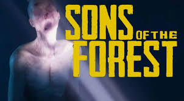
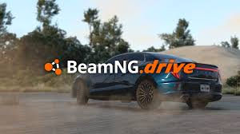

This is my home page, you can chill here or you can go to my about link at the top left and learn about me. Or you can look at some of my favorite games below.
Sons Of The Forest
 I like to play games.This is Sons Of The Forest. This game is probably one of my favorites the realism in it is crazy! This game is a sequal
from The Forest and this game is The Sons Of The Forest and you are in control of protagonist which is in fact the son in the first forest.
You were sent to find a billionair but instead you get shot down in your helicopter and get stuck on the island and you are left to survive while being challanged
by caniables trying to kill you.
BeamNG.drive
Another game I like to play in my freetime is BeamNG.drive which is a vehicle simulation video game and I like this game because
its a cool game to just mess around on. BeamNG.drive has soft-body physics, which simulates realistic handling and
damage to vehicles just like real life. So you can make a bus hit 13 trucks if you wanted to or you can tune cars and have fun racing Ai.